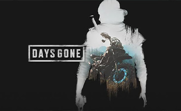

JEUX
Une selection d'une multitude de jeux de qualité, en accès libre !
Saints Row The Third Remastered
Les Saints de 3rd Street, des années après s’être emparés de Stilwater, sont passés de gang urbain à marque reconnue : on trouve dans chaque magasin les mêmes baskets des Saints, les mêmes boissons énergisantes des Saints et les mêmes figurines miniatures de Johnny Gat. Les Saints sont les rois de Stilwater, mais leur renommée ne passe pas inaperçue. Le Syndicat, un conglomérat de gangs légendaire présent aux quatre coins du monde, a désormais le doigt pointé sur les Saints et exige son tribut.
Red Dead Redemption 2

Amérique, 1899. La fin de l'ère du Far West a commencé alors que les hommes de loi traquent les derniers gangs de hors-la-loi. Ceux qui ne veulent pas se rendre ou succomber sont tués. Après un vol qui tourne mal dans la ville de Blackwater, Arthur Morgan et le gang Van der Linde sont contraints de fuir. Avec des agents fédéraux et les meilleurs chasseurs de primes du pays à leurs trousses, le gang doit voler, cambrioler et se battre pour survivre dans l'Amérique profonde et accidentée. Alors que des divisions internes croissantes menacent de déchirer le gang, Arthur doit faire un choix entre ses propres idéaux et sa loyauté envers le gang qui l'a élevé.
Ride 4
Êtes-vous prêt à vivre la meilleure expérience de jeu qu'un fan de moto puisse avoir ? RIDE 4 va éveiller votre âme de compétiteur avec des centaines de motos, des dizaines de pistes et un tout nouveau niveau de réalisme.
NOUVEAU ET AMÉLIORÉ CONTENU
Choisissez parmi des centaines de motos sous licence officielle et roulez sur des dizaines de pistes dans le monde entier, soigneusement conçues avec un niveau de détail extraordinaire ! Chaque atout a été créé en partant des données CAO, du laser et du balayage 3D pour atteindre la précision dans les moindres détails et vous permettre de profiter de la meilleure expérience de course de deux roues qui soit.
CHOISISSEZ VOTRE VOIE
Sautez dans une aventure incroyable et dynamique qui interagit avec vos décisions et choisissez votre propre chemin depuis les événements régionaux jusqu'aux ligues professionnelles. Démontrez vos talents de pilote à travers des courses stimulantes, des tests d'aptitude, des journées de piste et un vaste ensemble d'événements. Vous pourriez même devenir un testeur officiel des constructeurs les plus célèbres !
CYCLE JOUR/NUIT, MÉTÉO DYNAMIQUE ET RACES D'ENDURANCE
. RIDE 4 propose un système de conditions météorologiques entièrement dynamique et un cycle jour/nuit complet. Vivez la course sous un jour nouveau et prouvez que vous êtes le meilleur coureur dans n'importe quelle condition. Et pour la première fois, le mode "Endurance" mettra votre ténacité à l'épreuve, avec des arrêts aux stands animés et des courses de longue durée : préparez-vous à affronter un monde où la stratégie est l'ingrédient ultime de votre réussite !
Far Cry New Dawn
Plongez dans un Hope County, Montana, post-apocalyptique, transformé et vivant, 17 ans après la catastrophe nucléaire. Rejoignez d'autres survivants et menez le combat contre une nouvelle menace dangereuse : les Highwaymen et le leadership des jumeaux, qui veulent sécuriser les dernières ressources restantes.
LUTTE POUR SURVIVRE DANS UN MONDE POST-APOCALYPTIQUE
- Prenez les armes seul ou avec un ami en mode coopératif dans un monde imprévisible et modifié.
STOẞE ENSEMBLE AVEC LES Jumeaux
- Recrutez une équipe hétéroclite d'assistants et d'amis à quatre pattes sur appel et formez des alliances pour combattre à vos côtés contre les esprits incontrôlables des bandits de grand chemin, les Jumeaux.
Construisez votre base et vos survivants
- Recrutez des spécialistes pour améliorer votre base, débloquant de toutes nouvelles fonctionnalités comme la fabrication d'armes, d'équipements et plus encore.
Lutte pour les ressources du comté de HOPE et au-delà
. - Engagez les bandits de grand chemin dans des guerres de territoire et partez en expédition dans des lieux mémorables aux quatre coins des États-Unis.
Days Gone
Days Gone est un jeu d'action-aventure en monde ouvert qui se déroule dans une région sauvage et hostile, deux ans après une pandémie mondiale dévastatrice. Entrez dans la peau d'un ancien motard hors-la-loi, Deacon St. John, un chasseur de primes qui tente de trouver une raison de vivre dans un pays où règne la mort. Parcourez les colonies abandonnées à la recherche de matériel pour fabriquer des objets et des armes de valeur, ou tentez votre chance avec d'autres survivants qui tentent de gagner leur vie par le biais du commerce équitable... ou par des moyens plus violents.
Caractéristiques principales
- Un décor saisissant : Des forêts et des prairies, aux plaines enneigées et aux champs de lave désertiques, le Nord-Ouest du Pacifique est à la fois beau et mortel. Explorez une variété de montagnes, de grottes, de mines et de petites villes rurales, marquées par des millions d'années d'activité volcanique.
- Des rencontres brutales : Avec des gangs vicieux et des hordes de Freakers qui parcourent la terre, vous devrez utiliser pleinement une variété de pièges personnalisables, d'armes et de compétences améliorables pour rester en vie. N'oubliez pas votre moto Drifter, un outil inestimable dans un pays immense.
- Un environnement en constante évolution : Sautez sur la selle de la fidèle moto de Deacon et explorez un monde dynamique dramatiquement affecté par la météo, un cycle jour/nuit dramatique et l'évolution des Freakers, qui s'adaptent à leur environnement - et aux personnes qui s'y trouvent.
- Une histoire passionnante : le jeu est un jeu d'aventure. - Une histoire passionnante : Perdez-vous dans une puissante histoire de désespoir, de trahison et de regret, alors que le diacre St. John cherche l'espoir après avoir subi une perte personnelle profonde. Qu'est-ce qui nous rend humains face à la lutte quotidienne pour la survie ?
Des ressources variées...
Des jeux
Des logiciels
Des ressources packs
Des mods